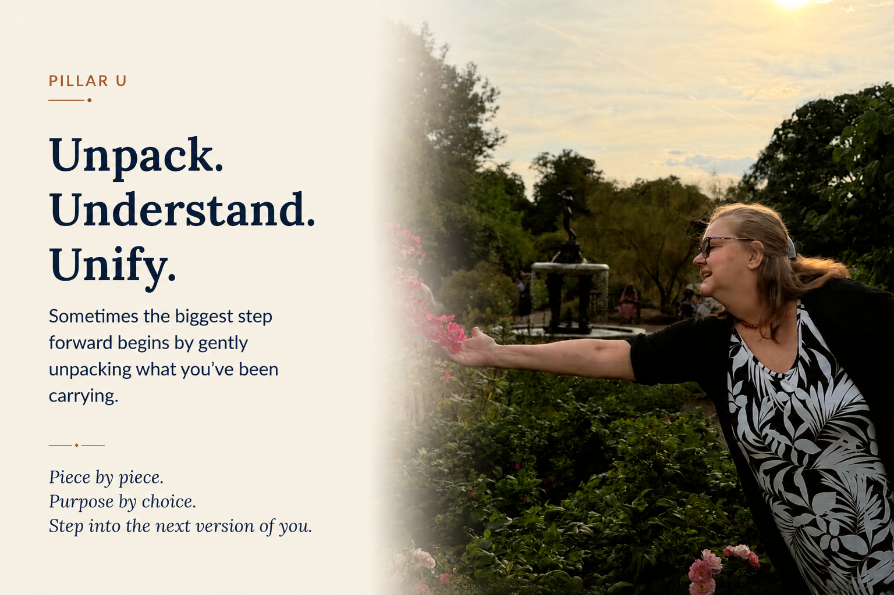
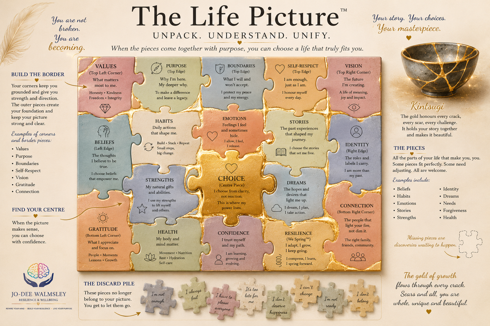
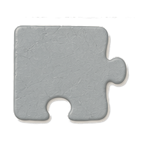
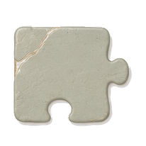
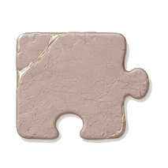
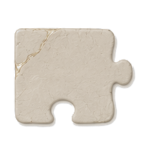
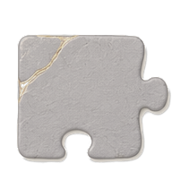
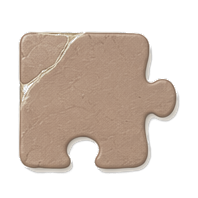
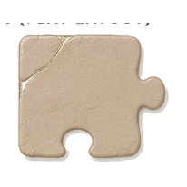
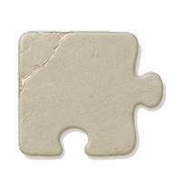

Unpack, Understand & Unify
Pillar U. Sometimes the biggest step forward begins by gently unpacking what you’ve been carrying. Piece by piece. Purpose by choice. Step into the next version of you.
We all collect experiences. Some become treasured memories. Some become beliefs, habits and stories that quietly shape how we think, feel and respond.
This pillar is about becoming curious: understanding what you’ve been carrying, and deciding what you want to keep and what you’re ready to put down.
The L.A.U.G.H.T.E.R. Method® is designed to support people navigating life’s challenges, whether that’s individually, in teams, or across organisations.
Continuing the Journey
From Awareness to Understanding
Awareness & Acceptance helped you stop fighting reality. This pillar is about understanding yourself well enough to move forward with compassion instead of criticism, working from where you are today rather than who you used to be.
A Question Worth Sitting With
What Are You Carrying?
We collect beliefs, expectations, labels, old hurts and assumptions. Some serve us well. Others have simply travelled with us for so long that we’ve forgotten to question whether they still belong.
“Does this still belong in my Life Picture?”
The Clues
How Do You Know You’re Carrying Something?
The clues are usually small: reacting instead of responding, repeating the same limiting stories, unhelpful habits and patterns that keep showing up.
Small intentional changes create new patterns
Try habit stacking: drink a glass of water before every coffee.
Understanding, Not Blame
Why Do We Keep Carrying These Things?
Fear, familiarity, loyalty, identity, and not realising we have a choice: these are what keep us holding onto things that no longer serve us.
FearFamiliarityLoyaltyIdentityNot realising we have a choice
Your Signature Teaching Tool
Meet The Life Picture™
One picture.
Many pieces.
One choice at a time.
This isn’t just a picture. It’s a way of seeing yourself.
During workshops you’ll build your own Life Picture™, discovering what belongs, what no longer fits, and the one choice that brings everything together.

You are not broken.
You are becoming.
In workshops, everyone begins with exactly the same blank puzzle pieces. By the end, no two Life Pictures™ look the same.
A Core Teaching Concept
How Your Life Picture™ Comes Together
Life isn’t one big decision.
It’s hundreds of small pieces that gradually create the picture of who we become.
Every piece matters.
Every choice matters.
Every day adds another piece.
Build the Border
Every Strong Life Picture™ Begins with the Edges
Your edge pieces create the foundation of your picture. They give it strength, direction and stability before anything else is added.
Values
What matters most to me.
Purpose
Why I’m here. My deeper why.
Boundaries
What I will and won’t accept.
Self-Respect
I am enough, just as I am.
Vision
The future I’m creating.
Gratitude
What I appreciate and focus on.
Connection
The people that light your fire, not dim it.
The Rest of the Picture
These Are the Pieces That Tell Your Story
Some fit perfectly. Some need adjusting. All deserve your attention.
Beliefs
The thoughts I believe to be true.
Habits
Daily actions that shape me.
Emotions
Feelings I feel and sometimes hide.
Stories
The past experiences that shaped my journey.
Identity
The roles and labels I carry.
Strengths
My natural gifts and abilities.
Dreams
The hopes and desires that light me up.
Health
My body and mind matter.
Confidence
I trust myself and my path.
Resilience
I adapt, I grow, I keep going.
Find Your Centre
The Centre Piece: Choice
When the picture makes sense, you can choose with confidence.
Choice
I choose from clarity, not reaction.
Letting Go
The Discard Pile
These pieces no longer belong to your picture. You get to let them go.
When you’re ready, you can begin to put them down. There’s no rush. Healing happens at your own pace.
And if looking at these brings up something bigger than a puzzle piece, that’s worth talking through with someone you trust, a therapist, or your GP. Reaching out is part of taking care of yourself, not a step backwards.

I’m not enough.

I always fail.

I have to please everyone.

It’s too late for me.

I don’t deserve happiness.

I can’t change.

I’m not ready.

I don’t belong.
Momentum
Small Changes. Big Results.
Motivation often follows action, not the other way around. Repeated small choices become habits. Repeated habits change direction.
A Gentler Kind of Freedom
Forgiveness & Letting Go
Forgiveness is about setting yourself free, not excusing what happened.
The Washing-the-Dishes Reflection
- Acknowledging the pain.
- Seeing the humanity in the other person.
- Forgiving, in your own time.
- Choosing peace.
Forgiveness is a choice, not an obligation, and it happens in your own time, if at all. If something you’re carrying feels too big to work through alone, a trusted friend, a therapist, or your GP can help you carry it.
Five questions to sit with
- What have I been carrying that no longer belongs in my Life Picture?
- Which belief, habit or story has had the biggest influence on the way I live today?
- What strengths, values and relationships do I want to build my Life Picture around?
- What is one piece I am ready to put down, and one piece I want to strengthen?
- What is one choice I can make today that will help me step into the next version of me?
One Tiny Choice
Piece by Piece
Choose one piece. Place it where it belongs. Repeat tomorrow.
Your Life Picture is built one choice at a time.
Looking Ahead
Having unpacked and understood your Life Picture, the next pillar is Gaining Knowledge Through Gratitude: learning to notice what has been there all along.
Your Life Picture™ doesn’t have to be perfect.
It doesn’t have to look like anyone else’s.
It simply needs to be true to who you are today.
Piece by piece.
Choice by choice.
You step into the next version of you.
Want to go deeper into Unpack, Understand & Unify?
Explore Unpack, Understand & Unify in the Visual Learning Library →
Continue exploring The L.A.U.G.H.T.E.R. Method®